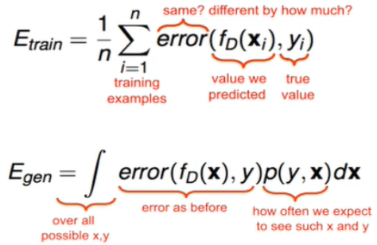

Types of ML
- Supervised Learning
- classification, regression
- Unsupervised learning
- Other settings of ML
- Reinforcement learning
- Semi-supervised learning
- Active learning,Transfer learning,Structured learning
- Dimensionality Reduction (unsupervised Learning)
- Large sample size is required for high dimensional data
- Query accuracy and efficiency degrade rapidly as the dimension increases
- strategies:
- Feature reduction, Feature selection, Manifold learning, Kernel learning

IID Assumption
- Identically independently distributed : This is the assumption that the training data and testing data comes from the same distribution
Types of Models
- Induction : Model Learns by Induction, ( creating it’s own rules for example, if we do extensive research while buying mobile, we create set rules, it is called induction).
- Transductions: Model learns from references ( for example, if we ask our friends about mobile and we buy according to their suggestion, it is called Transduction).
- Online : data could be a stream, data keeps coming over time.
- Offline: data is already acquired and trained offline.
- Generative: Learns the distribution, the model learns joint probability distribution.
- Discriminative:Learns to discriminate without learning distribution.
- Parametric : The model have parameters like \mu and \sigma
- Non parametric: The model doesn’t have parameters, as in K nearest neighbor (KNN)
Classifier evaluation

- Training Error
- Not very useful
- Relatively easy to obtain low error
- E_{\mathrm{train}} =\frac{1}{n}\sum_{i=1}^n \mathrm{error}\left(f_D \left(X_i \right),y_i \right)
- Generalization Error
- Measure of how well do we do on unseen data
- E_{\mathrm{gen}} =\int \mathrm{error}\left(f_D \left(X\right),y\right)p\left(y,X\right)\mathrm{dX}
Stratified sampling
- First stratify instances by class, then randomly select instances from each class proportionally
- It ensures that the proportion of each class remains same in training and validation set.
Model Selection
- Re-Substitution : not useful as it suggests to re- substitute the train data for validation as well
- K - Fold cross-validation : Divide the data in K fold using stratified sampling, and the select some set for training and some for validation in each iteration.
- Leave-one-out
- N-fold cross-validation